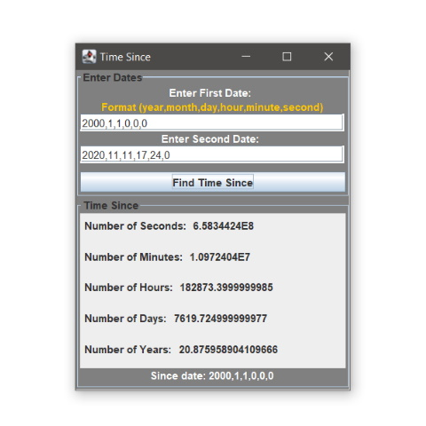

A java and swing program
The Find Time Since app allows the user to enter two dates and the number of seconds, minutes, hours, days, and years between the two dates. This app was fun to make and I enjoyed getting to find out the number of seconds I have been alive, I found out that soon I will 200000 hours old! The difficult part about making this app was accounting for the varying amount of days in each month and keeping track of leap years.
In the future I plan on adding a button that puts the current time into the second date making it easier to find out how long it has been from a time in the past until now. I would also like to make this into an app that updates in real time so the user could see the seconds and minutes passing as they look at the app.
Download Find Time Since App